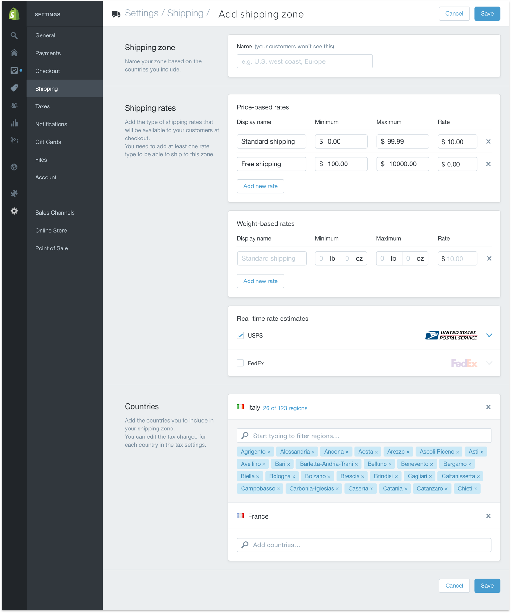

Designer, Internship, Fall 2015
During my stint at Shopify, I worked as a designer, embedded on the Shipping team with a handful of engineers, some PM folks, and another designer. Building an ecommerce platform, the Shipping team at Shopify was responsible for making sure the merchants on our platform could ship their products to their customers.
As a team, our mandate was simple: do whatever we can as a company to make it easier for merchants to get their products to their end customers. We were doing that by reducing the reliance on third-party applications for our merchants' shipping needs. We'd started by selling shipping labels on our platform, but over time, we'd liked to absorb as much of that process into Shopify as possible—from organizing shipments, all the way to packing boxes.
To make sure that whatever we were building mades sense for us as a team, a business, and a product, our team relied on the success of these metrics:
Number of merchants using, and revenue ($) from Shopify shipping: moving merchants to our in-house shipping solution
Support hours spent helping merchants: minimizing these hours due to the complicated configuration of shipping settings and logistics
Retention of merchants on Shopify Shipping: keeping the experience simple and repeatable
Although the shipping problem was wide and encapsulating of a complicated process, I wanted to improve and simplify the way that merchants organized their geographically-based shipping costs. I mapped out the existing workflow, and it looked something like this:
We'd gotten a bunch of feedback from new merchants that they weren't too clear on how a shipping zone and shipping rate were related based on the back-and-forth of this flow, so we thought to simplify the flow by embedding shipping rates within a shipping zone.
With the new shipping zone workflow, we were able to quickly mock something up with existing components and patterns in the Shopify Design System.

It seemed to work well, and more people understood the relationship between shipping rates and shipping zones. However, as we began to explore it on mobile web, we found that the responsive shrink-and-stack strategy we were using for mobile web made this section complicated to use on mobile.
Based on the faults of our existing mobile-web strategy, we started exploring ways in which we might have designed Shipping settings if it were optimized for an experience on mobile web. I built a prototype using a layered approach to explore a way in which we could break up each section of the settings, and each form field into a separate screen.
Heuristically, the number of layers felt overwhelming to someone who might have gone in wanting to adjust just one shipping rate. So, we aggregated related form fields into sections, and created a pattern of having read-only settings, where only constructive and destructive actions were placed in a separate layer.
To bring the exploration back full-circle, we proposed that the corresponding desktop system would follow the same sheet transitions to provide a consistent experience.
Since the Shipping section of our platform's settings were amongst the more complicated, we proposed similar patterns for the existing sections of our settings, and using similar constructive and destructive sheets for other parts of our platform like creating and editing products or customer profiles.